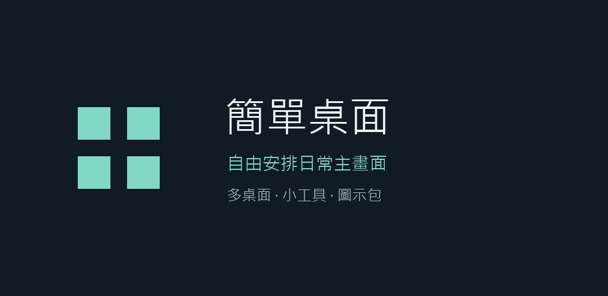
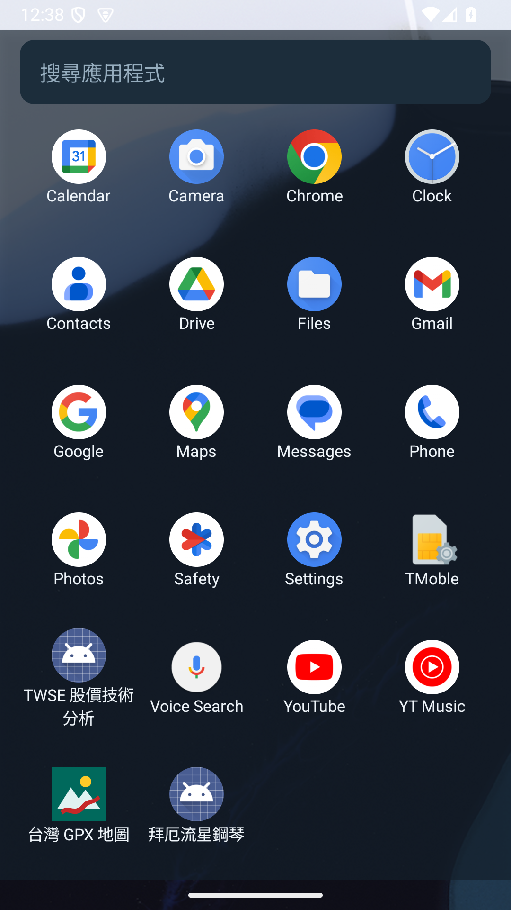
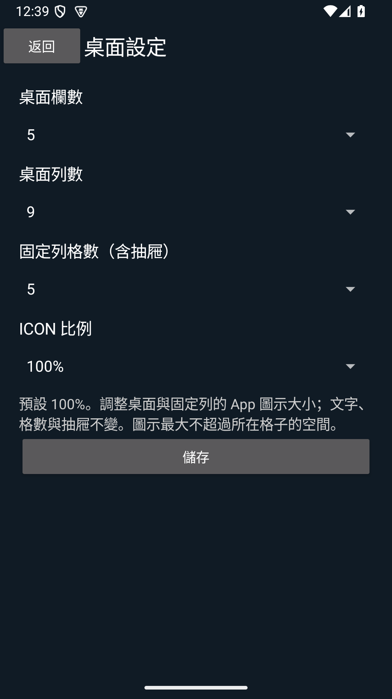

你的桌面配置
調整欄列與圖示比例；左右滑動切頁，透過縮圖新增、排序或刪除桌面。

加入群組與參加 App 測試是兩個步驟。第一步使用與 GPX View 共用的群組，頁面會顯示「GPX View 台灣離線地圖測試群組」；加入此群組不等於已參加 GPX 或簡單桌面的 Play 測試。簡單桌面須在第二步另行參加。
招募台灣地區、年滿 18 歲、使用 Android 8.0 以上手機的測試者。希望至少有 12 位參與者，加入後連續保留測試資格 14 天，並在日常使用時回報實際遇到的問題。
使用手機 Google Play 相同的 Google 帳號，開啟群組並加入。沿用 GPX View 的測試群組，名稱仍為 gpxview-tw-testers。
若無法自行加入，請透過下方信箱聯絡。
測試版開放後，以同一個 Google 帳號開啟測試頁，選擇參加測試，再依頁面指示到 Google Play 安裝。
2026-09-21 實測顯示「App not available」，尚無法參加或安裝。正確套件為 com.lisam.launcher；此連結不會帶到 GPX App。
依 Android 提示選擇「簡單桌面」作為預設主畫面。試用後告訴我們手機型號、Android 版本與問題發生步驟。
可在系統「預設應用程式／主畫面」隨時切回原本的桌面；名稱依手機品牌而異。
調整欄列與圖示比例；左右滑動切頁，透過縮圖新增、排序或刪除桌面。
放置小工具、套用相容圖示包、修改捷徑名稱與圖示；抽屜可選橫式或直式。
雙擊桌面或抽屜空白處開啟設定；試用桌面配置的檔案備份與還原。


請附上手機型號、Android 版本、操作步驟及預期結果。
如附截圖，請先遮蔽帳號、通知或其他私人資訊。